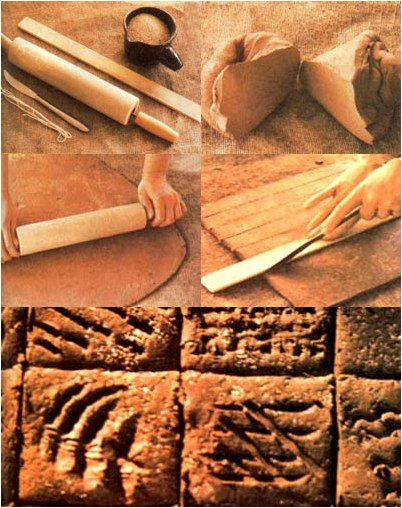

Making decorative (and useful) tiles is as much fun as mixin' mud pies and, if you have clay and wood on your land, the project won't cost you a cent. Even if you have to buy clay, homemade tiles are far less expensive than any you can purchase.
If you have poor drainage on your land, tilemaking material probably lurks just beneath the topsoil. Dig up a handful of the earth that you suspect might be clay. Does it feel pliable? If not, moisten the material with water. Roll some between your fingers to form a "rope", then bend the strand into a ring. If the loop has only a few cracks around its outer edges, go ahead and dig up about 10 pounds of the same soil ... it'll work just fine. However, if the material cracks, crumbles, or is full of sticks and stones, you'll have to look elsewhere or buy your clay.
Refractory companies, brickyards, and building suppliers usually sell dry bonding clay, which is inexpensive (around $2.75 for a 50-pound bag) and an excellent tile material. (This is the clay masons use when laying bricks for fireplace interiors.)
To mix commercial clay, fill a five-gallon pail half full of water. Add the powder to the bucket-slowly-until you can't put any more in without having the "dust" mound above the surface of the water. Put the remainder of your powder away until you want to do another project. Powdered clay will keep for years, but don't let it get wet. Should the material become damp or lumpy, you'll have to pulverize it with a sledgehammer and sift it through a window screen before you start mixing.
(Later, you can prepare large quantities of the substance and make hundreds of tiles ... or store the wet clay-ready for use-in plastic bags. But while you're still "learning the ropes", it's best to run through the whole tilemaking process on a small scale ... in order to familiarize yourself with all the steps before you attempt large projects.)
The morning following your first "clay mixing", pour off any water that's standing on the top of the bucket and spread a sheet of plastic or canvas on the ground in full sunlight. Now the fun starts!
Reach down into the pail, scoop up the whole soft, goody mess, and plop it onto the sheet. Smooth the material out with your hands and let it dry for several days. (Even if the weather's cold enough to freeze your clay, it will still dry.)
In the meantime, don't rush to the kitchen sink to wash your hands. Clay clogs drains and isn't nice to septic tanks. So just refill your mixing container with water and wash in it. Then set the bucket aside and use the some water to rinse off your hands while making tiles. (Eventually, the "waste" clay will sink to the bottom of the pail and-when you've accumulated a goodly amount-you can pour off the liquid, scoop out the clay, and dry it, too, on the plastic or canvas sheet.)
While your "raw material" is lounging in the sunshine, find yourself a place to work. A kitchen table covered with newspapers is fine, but-since this is a messy project-a spot in the basement or garage would be better. You'll need a piece of plywood (at least 2' by 2' . . . preferably even larger) covered with burlap, canvas, or an old sheet. A rolling pin, a table knife, a one inchwide wood slat, and a piece of string-two or three feet long-will be all the tools you'll need.
When the clay has dried to the point that if s no longer sticky, bring it to your work area. (From this point on, the procedures are the same, whether you're using field-dug or store-bought clay.) Cut off a chunk about the size of a cabbage head and set it on the cloth-covered board. Wrap the remaining material in plastic-to keep it from drying out any further-until you're ready to work with it. (Damp towels can be used instead of plastic, if you don't let the moisture evaporate.)
Before anything "permanent" can be made with clay, the material must be wedged. This is a process similar to kneading bread, except that it's aimed at eliminating-rather than adding-air. (Any "pockets" will expand when fired and can cause a tile to explode ... so wedging is very important.) First, sprinkle about onefourth cup of sand on the board . . . the grit will add strength as it works into your tile material.
Next, forget all your nonviolent ideologies. Lift the clay up over your head and slam it down hard several times. Then put your left hand on the left side of the mound and your right hand on the right edge ... toward the top. Push forward with your left hand and then pull the clay back with the right. Let your arms-and your whole body-move with your hands. Continue this operation for about five minutes, then cut the clay in half with the string. If the surface of the cut is smooth-with no air holes or crevices-you're ready to fashion some tiles.
Whack the two pieces back together and slap the clay down on the board. Turn it over and slam it down again! Pound it, flip it over, and throw it down once more! Then beat the clay with your fists until it spreads out flat.
When the mass of clay is about one inch thick, flip it over and-keeping the pressure even-use your rolling pin to flatten the "mud pastry" . . . as if you were making a pie crust. Periodically, lift the sheet and turn it upside down so that it doesn't get stuck to the board. After it's been rolled to about 3/8" thick, lift the "dough" one last time, set it down gently, and smooth it out with the rolling pin.
For the next step, use your wood slat and a sharp knife to trim off the ragged edges, leaving a nice, even rectangle. (You can rewedge and roll out the scraps for more tiles, or save 'em-wrapped in plastic-for another time.)
Tiles can be made in any shape or size that you wish, but my experience indicates that small (about one-inch) squares are strongest. The easiest way to cut this sort of tile is to line your wood slat up with the left side of your sheet of clay and run your knife slowly along the right side of the slat. Now, move the "ruler" over a notch (aligning its left side with the cut you've just made) and make another cut along the right side. Repeat the procedure all the way across the clay. Then simply do the same thing from top to bottom, making horizontal lines. Each square of the resulting grid will be a tile.
It's best not to move your mini-ceramics for at least 24 hours. Lifting the small squares when they're still soft tends to make the corners curl, and they have a natural inclination to do so anyway.
On the morning following "cutting" day, take the tiles off the board and set them face down on a level, newspaper-covered surface. Reversing the tiles helps them dry flat, so-after still another day-turn them back over to their original position. As it dries, the clay will become lighter in color and quite hard.
Your tiles will have picked up some texture from the cloth that covers the work area. If you're feeling creative, however, you can carve designs into the clay on the second day of drying ... before you turn them over. The curved end of a hairpin makes a good "pencil" or-if you can't draw-just go out and get some leaves, a seashell, an old spool, paper clips, nails, bark, or what have you and press these designs into your tiles.
No matter how lovely your creations may be, they won't be permanent until they're fired. Unfired clay breaks easily and will return to mud if it gets wet. However, before your tiles can be committed to the flame, they must be so dry that they don't feel cool when held against your cheek. Clay that has reached this stage of dryness can be fired in a fireplace, wood stove, or outdoor pit ... depending on the season and your circumstances.
If you use a fireplace, lay the tiles out flat on the bottom, build a hot fire on top, and let it bum all day. Leave the clay squares in the coals overnight, and-the next morning-rake the cooled tiles out of the ashes. The colors will vary from gray to black to yellow. And-since the flame leaves its mark-many will have black areas which won't rub or wash off. Various cultures (including the ancient Greeks and the Pueblo Indians) have used this natural coloring to great artistic effect.
Though many types of stoves can be used to fire clay, a box stove is ideal for this purpose. The logs are positioned on the horizontal and provide a nice surface for the tiles ... and the stove cools slowly after an overnight fire, so it won't put the clay through any sudden drops in temperature.
In the late afternoon, lay your tiles flat across the uppermost logs, get a good fire going, close up the stove, and let it roar. The tiles will heat gradually and then-as the fire burns on-become red hot. When the wood is burnt, bury the tiles in the bed of coals and load the stove again. Let it bum overnight, and-in the morning-rake out the tiles before you build the day's first fire.
But suppose the weather is sweltering, or you've just made 750 of the world's most beautiful tiles and want to fire them all at once? Either of these situations would call for the open pit firing method.
First, check the fire regulations in your area. If there's no burning ban, dig a hole-away from trees or dwellings-about two feet deep and two to three feet across. (Be sure to clear all dry grass and brush away from the fire site.) Now, go out and gather enough sticks to produce a big pile ... about eight feet long, three feet wide, and three to high. line the hole with dry grass and a few sticks, and spread tiles over this material. Make another layer of grass and sticks, and then another layer of tiles (it's kinda like assembling lasagna). When you've put in the last layer of tiles, cover the excavation with sticks.
Light one edge of the resulting woodpile, and let the fire work its way to the center. When the heap of sticks on top of the hole has begun to burn down, add another handful, let it burst into flame and bum down a bit, and then add more fuel. Continue until you've used up your wood.
(Needless to say, water-either in containers or from a readily turned-on hoseshould be on hand in case the fire gets out of bounds. Do be careful!)
Let the coals cool down overnight, then gently scoop out the ashes and remove the tiles. Beautiful, aren't they.
Your homemade tiles can be used in any application where store-bought "ceramics" would normally be called for. To fasten them to walls or floors, purchase some grout at your local hardware store and follow the directions on the can. For outdoor use, lay them in a bed of sand.
You may coat the tiles with a sealer if you wish (otherwise, they'll be porous ... like red bricks), wax them, or leave them natural. After you've gained some experience in tilemaking, you may want to plan your designs on paper first, and even make tiles of specific sizes for certain areas.
Finally, after your counter is tiled or your outdoor dining area paved, you can sit back and admire your work ... and-better yet-gloat over all the compliments your homemade tiles will get!
|
 PHOTOS BY JOSEPH JANGBU SZALAY |
|
|